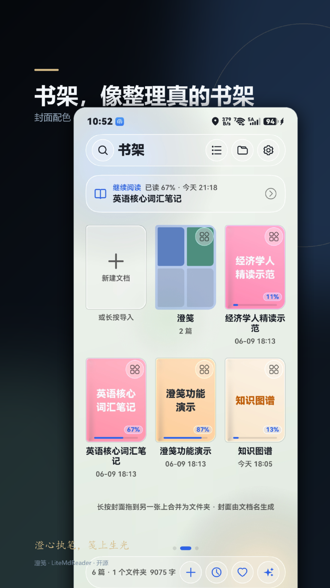
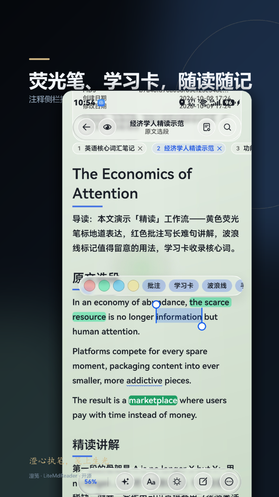
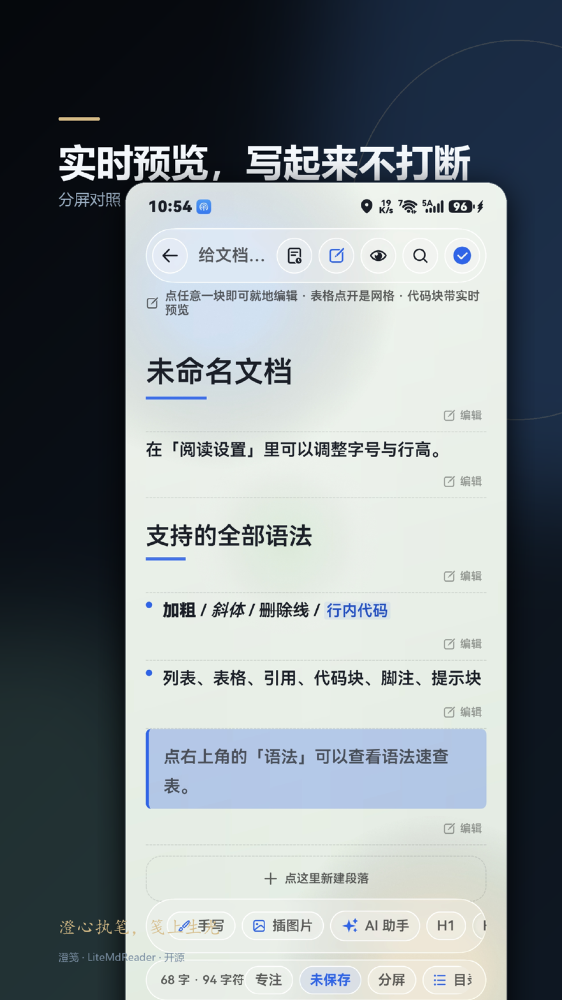
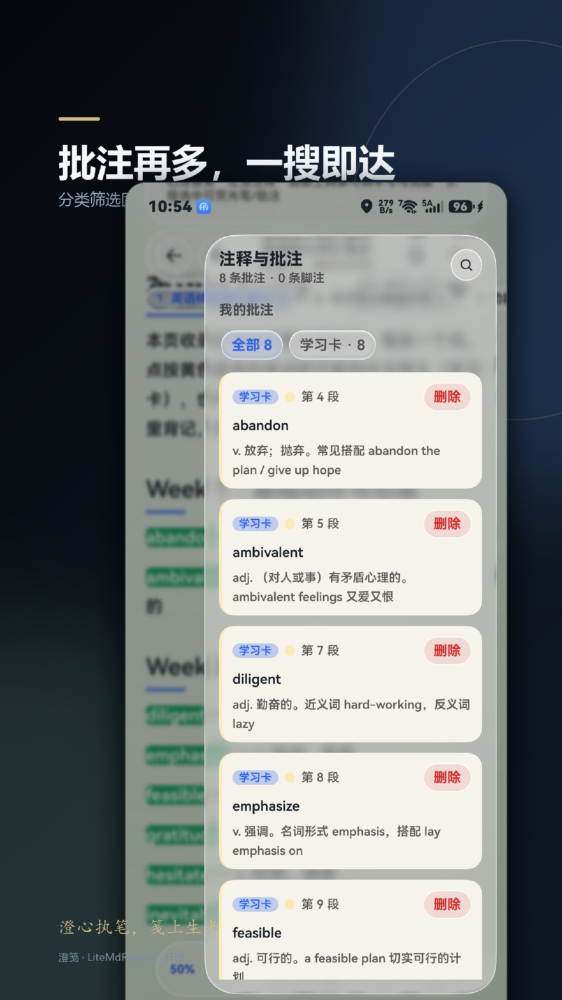
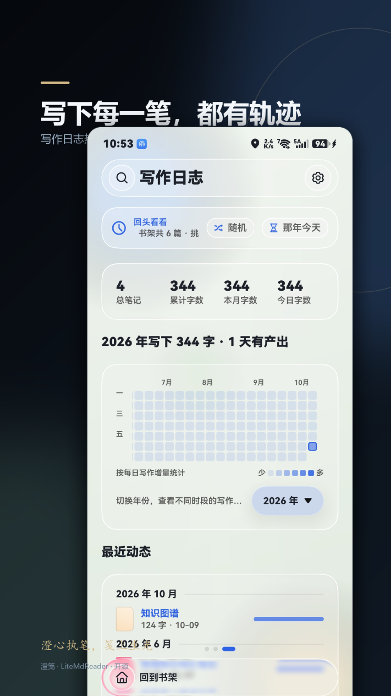
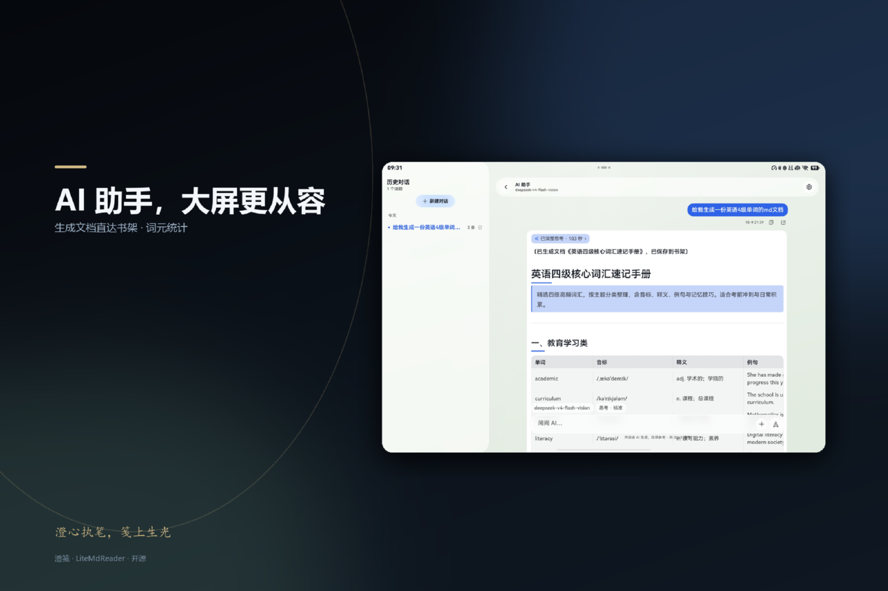

精读
一篇外刊读到底
导入 .md 或从其他应用分享进来，左目录右批注两条抽屉，进度自动记忆。
- 荧光笔 / 波浪线按「块 + 文本区间」记录，调字号行高不错位
- 文档内查找与大纲跳转
- 只读模式锁住编辑入口，放心交给别人看
HarmonyOS 原生 · ArkTS / ArkUI
「澄」是澄澈透光，「笺」是文人读写的纸笺。 澄笺把沉浸光感材质、卡片化排版与一镜到底的动效放进一个纯粹的 Markdown 书房—— 没有信息流，没有账号，没有云端。图表与公式随包离线渲染，批注与学习卡只存在你自己的设备上。
AI 助手不内置任何模型服务：接口地址与密钥由你自己填写，内容直传你信任的接口。
示例问题（可切换）
示意界面：演示问题与文档均为本地样例，非真实用户数据；步骤为该功能的处理流程演示。
书架、阅读、写作、复习、AI、外观、数据七组能力，全部在同一台设备上完成。下面的每一条都来自应用当前版本的实际功能清单，可切换查看。
三页循环滑动——文房、书架、写作日志。封面由程序按文档名哈希绘制，长按可以拖动、合并、换位。

多标签同时开着几篇，左侧目录、右侧批注是两条侧滑抽屉；宽屏两侧常驻，分隔条还能拖宽。

注释侧栏自带搜索，分类筛选固定在顶部——批注多了也能一眼过滤到学习卡或文字批注。
编辑页与阅读页共用同一套渲染器：点哪段改哪段，改完原地变回渲染态。
docs/images/ 并以相对路径引用，阅读页真实加载
划选文字选「学习卡」，就能在应用内背记——不用注册任何第三方学习服务。


应用不内置模型服务、不收任何费用。模型、地址、密钥全部由你填写，我们不经手任何内容。
使用外部接口产生的费用由该接口提供方收取；澄笺本身不做中转服务器，也没有任何形式的抽成。

沉浸光感材质基于系统 uiMaterial 承载层，深浅色切换整树重建；颜色只做薄染，不压过正文。
数值来自 theme/DesignTokens.ets 与 theme/ThemeStore.ets，可在下面的界面示意里实际切换看看。
文档、书架索引、批注、学习卡、进度与外观设置全部存在本机应用沙箱内；应用内没有统计、广告、推送 SDK。
下面是功能组合出来的用法示意，不是用户案例或效果承诺——真实成效取决于你读什么、写什么。
精读
导入 .md 或从其他应用分享进来，左目录右批注两条抽屉，进度自动记忆。
背词
选中单词点「学习卡」，填一句中文备注，之后按 SM-2 曲线排期出现。
写作
分段预览改哪段看哪段，停顿约 1 秒自动落盘，版本历史随时对比回滚。
多端
同一套 UI 在手机、平板与 2in1 上自适应：抽屉变常驻三栏，标签栏可收进悬浮胶囊。
这一屏是网页重绘的阅读界面示意：主题、主题色、字号、版心都取自应用内的真实配置项，切换会立刻生效。选一段正文还能试出荧光笔胶囊——批注只在当前页面存在，刷新即消失，不写入任何地方。
还没有批注。在上面的正文里点选一段文字，试试四种荧光色。
应用内的学习卡会进入复习系统：正面原文、翻面看备注，按 SM-2 曲线安排下次复习。这里的批注不会保存。
下列截图来自仓库 应用截图/ 的实拍图，使用内置演示数据（英语学习示例包），画面含示例文档名与时间戳。点击任意一张可放大查看。
完整截图与演示数据包可在仓库中获取：项目主页。
这不是「我们承诺不看你数据」，而是结构上没有能看的东西：没有服务端，没有中转，也没有埋点。
没有登录、没有云同步默认项、没有行为分析。备份是可选动作，且只去你自己指定的地方。
界面由系统沉浸光感材质承载，颜色只做薄染；深浅色按「应用深浅 × 系统深浅」双维取材质。
卡片化留白、可调版心、可导入字体，正文与图表都为长文阅读让路。
划选即学习卡、按记忆曲线排期、签到与统计本地存储，不依赖任何第三方学习服务。
# 产品用到的每一行源码、每一个渲染模板、每一份构建配置都在仓库里 entry/src/main/ets/ pages · markdown · theme · material · service oh-package.json5 依赖与随包离线库 build-profile.json5 构建配置 # 唯一的例外是签名证书与密码
适配 HarmonyOS 6.1 及以上（手机 / 平板 / 2in1）。安装与更新渠道以上述 Releases 为准。
与仓库 CHANGELOG.md 及应用内「探索中心 → 更新日志」保持同步。
2026-10-20
2026-10-18
2026-10-17
与应用内「功能帮助」的速查条目保持一致。
阅读、写作、批注、复习、导出都能离线完成。联网只发生在四种情况：文档里显式写了网络图片、WebDAV 备份 / 恢复（含自动备份）、你主动使用 AI 助手（内容直传你配置的接口）、探索中心点「检查更新」。
在「设置 → 助手设置」里填入你自己的 API 地址与密钥（OpenAI 兼容或 Anthropic 均可）。应用本身不内置模型服务、不收任何费用；使用外部接口产生的费用由该接口的提供方收取。
不会。AI 助手把你的输入直传你自己配置的接口，应用不经手、不存储任何对话内容到云端；对话记录只保存在本机沙箱，卸载即消失。
mermaid、ECharts、Graphviz、flowchart、markmap、PlantUML（含 nwdiag / salt / ditaa）等图表与 KaTeX 数学公式、abc 五线谱，渲染库全部离线内联在安装包内，渲染不产生网络请求。图表会在后台预渲染成图片缓存，翻到即见，导出时也直接复用；AI 回复里的图表同样可以全屏放大。
可以。书架顶栏的文件夹按钮导入 .md / .markdown / .txt，重名会自动加序号、不覆盖已有文档；也可以把文件直接拖进书架窗口，或从其他应用分享到澄笺。
学习卡是独立的高亮形态（实色黄底 + 必填中文备注），专供复习系统使用；荧光笔、波浪线、文字批注是另一种记录形态，两者数据互不影响。
存在应用沙箱内，卸载会一并删除。重要内容建议定期用「本地备份包」导出，或连接你自己填写的 WebDAV 服务器；也可以开启自动备份间隔（每 1 / 3 / 7 天）。
长按桌面空白处 → 服务卡片 → 澄笺，选择 2×2 卡片即可；卡片展示最近文档与阅读进度，点击直达继续阅读。该卡片自 v1.1.1 起恢复启用。
探索中心点「检查更新」，应用读取发布页上的最新版本号与当前版本比对：有新版本会弹窗并可一键跳转下载页，已是最新则直接提示。